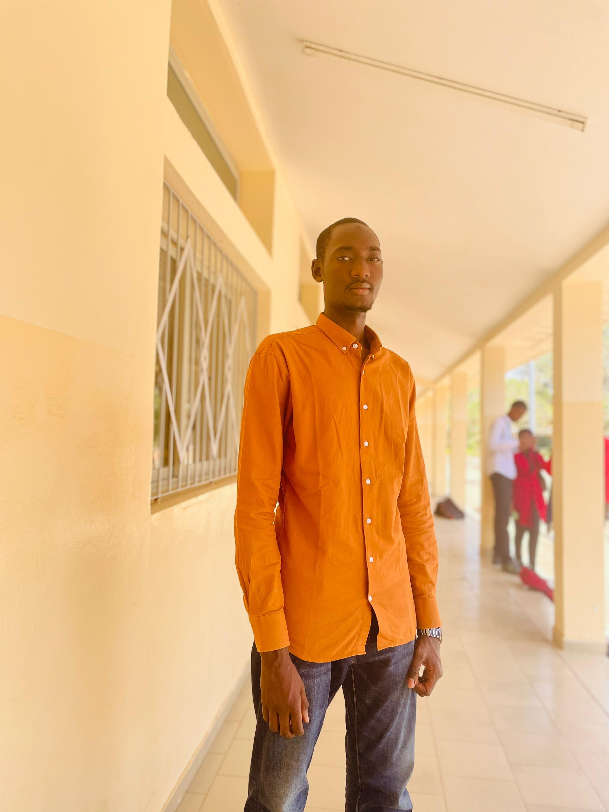

Dakar, Sénégal | Téléphone : 77-677-40-80/76-784-58-19 | Email : ahmetndaw2003@gmail.com
Étudiant en ingénierie informatique à l'Université Assane Seck de Ziguinchor (UASZ), je m'intéresse à la programmation, au développement web et aux nouvelles technologies. Motivé et sérieux, je souhaite renforcer mes compétences techniques et acquérir une expérience professionnelle.
Université Assane Seck de Ziguinchor (UASZ)
Formation en informatique : programmation, bases de données, réseaux et développement web.
2024 - Lycée Sergent Malamine Camara, Dakar